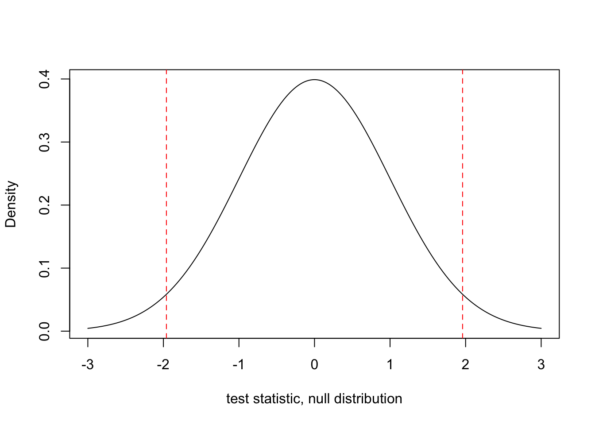
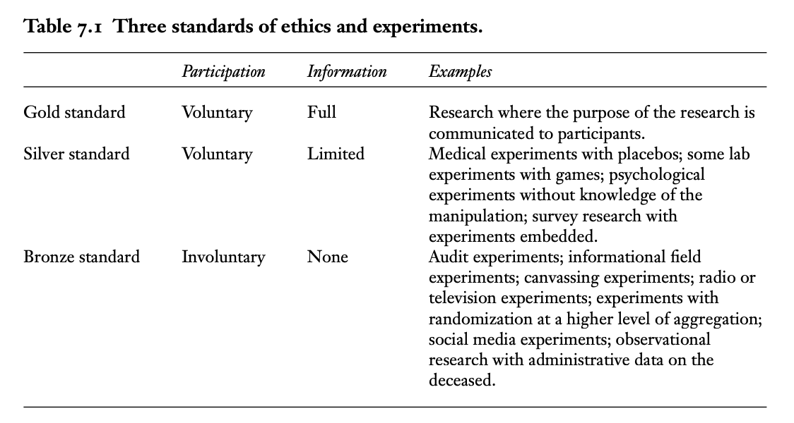
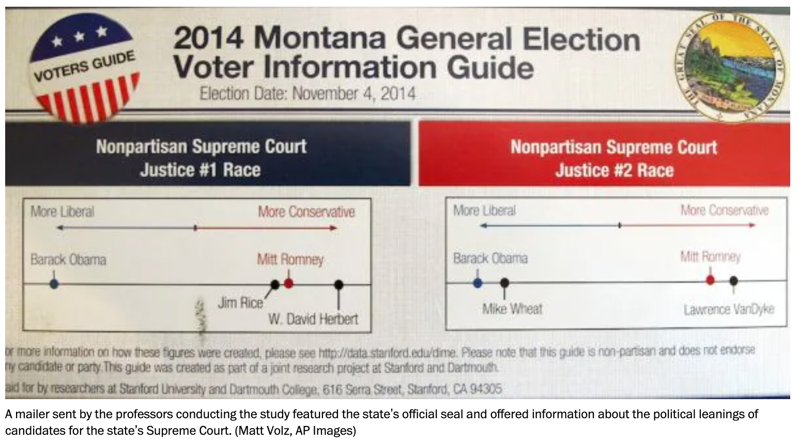
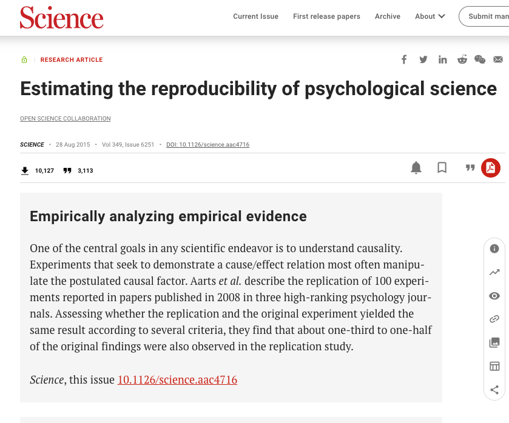
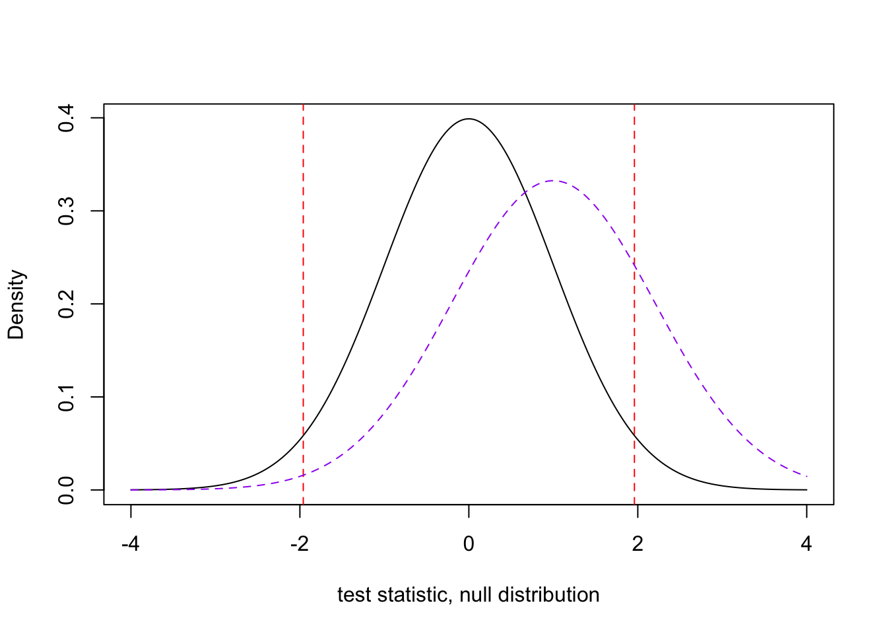

6 Ethics and Sampling Considerations
In this section, we touch on different ethical issues that can arise when conducting experiments, as well as considerations we should have when recruiting subjects and assessing data quality.
We touch on the following resources:
- Teele, D. (2021). Virtual Consent: The Bronze Standard for Experimental Ethics. In J. Druckman & D. Green (Eds.), Advances in Experimental Political Science (pp. 130-146). Cambridge: Cambridge University Press.
- Konnikova, Maria. 2015. “How a Gay-Marriage Study Went Wrong.” The New Yorker.
- Johnson, Jeremy. 2015. “Campaign Experiment found to be in Violation of Montana Law.” Washington Post. - In Defense of the Montana Experiment by Thomas Leeper.
- Boudreau, Cheryl. (2021). Transparency in Experimental Research. In J. Druckman & D. Green (Eds.), Advances in Experimental Political Science (pp. 339-353). Cambridge: Cambridge University Press. doi:10.1017/9781108777919.024
- Krupnikov, Yanna, Nam, Hannah, & Style, Hillary. (2021). Convenience Samples in Political Science Experiments. In J. Druckman & D. Green (Eds.), Advances in Experimental Political Science (pp. 165-183). Cambridge: Cambridge University Press. doi:10.1017/9781108777919.012
- Kane JV. More than meets the ITT: A guide for anticipating and investigating nonsignificant results in survey experiments. Journal of Experimental Political Science. Published online 2024:1-16. doi:10.1017/XPS.2024.1
6.1 Value of Informed Consent
Below we will use some of these questions to guide our discussion.
As Teele reviews, the Belmont report covers three principles. How should we define these?:
- Beneficence
- Respect for persons
- Justice
Here is a summary of different forms of consent:

Which one is the most common for the experiments we have designed?
What is the value of informed consent? What does it try to achieve
Your ideas …
When might informed consent undermine research goals? Can it ever actually increase harm to subjects?
Your ideas …
How can we resolve tradeoffs between informed consent and measurement? Should we? Must we?
Your ideas …
In cases where we do not get informed consent for seemingly valuable reasons, can this go awry? Are there potential downstream consequences? Does it depend on the sample size? Or study design? Is the research still worth it in the end?
Your ideas …
See example mentioned in response to a study varying the names used in emails to Colorado county clerks:
“My name is Karim and I hope you are well. I found your contact information in a voting resources directory and I want to ask about the voting process. What do I need to bring to vote? I want to vote for president but I did not register with a political party. Do I have to do that before I vote. And if I have to work late will I still be able to vote in time.”
See example of mailers sent to more than 100,000 Montana registered voters for a nonpartisan judicial election.

6.2 Research Integrity, Reproducibility, and Transparency
How do the incentives that structure academia encourage vs. discourage research fraud?
Your ideas …
Are there steps the field has taken / can take to detect and mitigate it?
Your ideas …

When our findings don’t replicate, how should we interpret this? Does it mean the original result was a false positive?
Your ideas …
6.2.1 Preregistration
What is pre-registration? (from Boudreau)
- “Practice of developing one’s research questions, hypotheses, research design, and analyses before observing the data and making that information public on an independent registry.”
- “Researchers may also create and submit pre-analysis plans that describe in detail the procedures they will use when collecting and analyzing the data (e.g., planned data analyses and statistical tests).”
- These can also include standard operating procedures
- Here is a short guide to a pre-analysis plan from EGAP
- Examples of pre-registration registries: Aspredicted.org; Open Science Framework; EGAP (now hosted by OSF)
- Note that some journals now require pre-registration for experiments. E.g., The Journal of Politics
- Some journals now offer a chance to submit a registered report, where your paper is reviewed blind to the results. E.g., Journal of Experimental Political Science. See a discussion from the editor Vin Arceneaux here.
What items should be included in a pre-registration plan?
Your ideas …
What are the benefits of pre-registration? Are there downsides?
Your ideas …
6.2.2 Reporting an Experimental Analysis
(from Boudreau and Gerber et al. 2015)
- Eligibility and exclusion criteria for participants
- Details of recruitment and selection of participants, including incentives and any firms used
- Type of experiment (lab, survey, field), mode, location, and dates conducted
- Response rate or other participation metric (and how calculated), when possible
- Details of randomization procedure
- Baseline means and standard deviations for demographics and other pretreatment measures by experimental group
- Whether blinding took place and how it was accomplished
- Description of the treatment(s), as well as description of the control group
- Details of experiment: its duration, number of participants, within- versus between-subject design, piggybacking/ordering/repetition of treatments, use of deception, use of incentives
- Evidence treatment was delivered as intended, if available
- Definitions of outcome measures and covariates, as well as noting whether the level of analysis differs from the level of randomization
- Identification of analyses specified ex ante versus ex post exploratory analyses
- Information in CONSORT participant flow diagram
- Sample means and standard deviations for outcome variables using intent-to-treat analysis
- Patterns of missing data, attrition, and methods of addressing these issues if missing data and/or attrition are present
- Description of weighting procedures, if used
- Institutional review board approval, preregistration, source of funding, conflicts of interest
- Availability of replication materials and data set
6.3 “Failed Designs”
What can we do in our experimental designs to allow learning even when we do not get significant results?
Your ideas …
Kane (2024) offers a few ideas. Table 1 provides tips on approaching these seven alternative explanations.
- Check for inattentiveness. How can we do this?
- Did the treatment vary the independent variable of interest?
- Were respondents pre-treated– maybe even outside the context of the study?
- Is there enough statistical power?
- Do we have a sound measure of our outcome? In what way? How can this go wrong?
- Do we have ceiling/floor effects?
- Are there counterveiling treatment effects? How can we look for these?
6.4 Sampling Considerations
What makes a sample a good sample?
Your ideas …
Who is in our sample? For an average person’s discussion of polling and sampling and participating in surveys, see 37-39:40 minutes of the Nateland podcast.
How can we check for data quality? What elements are a part of data quality? I.e., what should we be worried about?
Your ideas …
What are examples of bot checks/attention checks?
Your ideas …
When should we actually exclude subjects? When should we not?
Your ideas …
6.4.1 Power Analysis
We are often concerned about guarding against false positives. We do this by setting a conservative threshold for judging significance in hypothesis testing.
- Type I error: “false positive”: the error of rejecting a null hypothesis when it is actually true +Conventionally, our tolerance for false positives are \(\alpha = 0.05\).
- Type II error: “false negative”: conclude there is no effect (failing to reject the null) when there is one.
- We tend to refer to this as \(\beta\) and statistical power is \(1-\beta\) (true positive)
What is a test’s Power?
- Power helps us guard against false negatives. It is the probability of a true positive:
- Finding a significant effect if one is there,
- (1- Type II) where a Type II error is when you conclude there is no effect when there is one.
- See discussion on power from EGAP.
Terms
- \(\beta\) is measure of power, between 0 and 1.
- \(\Phi\) is the CDF of the normal distribution (think: area under the curve), and \(\Phi^{-1}\) is its inverse.
- \(\mu_t - \mu_c\) is the difference in average outcomes in the treatment and control groups.
- \(\sigma\) is the standard deviation of outcomes.
- \(\alpha\) is our significance level - conventionally, 0.05.
- \(N\) is the total number of subjects. This is the only variable that is under the direct control of the researcher.
Helpful video
Recall that t-statistics beyond the critical values (e.g., 1.96) will result in rejecting the null hypothesis.
We want to know the probability that our test statistic will fall in this rejection region.

6.4.2 Power in R
To conduct a power analysis
We need all but one of:
- sample size
- effect size in population
- standard deviation of outcome in population
- desired power level
- significance level
What makes this calculation difficult?
For continuous variables, we can calculate the power of either one-sample or two-sample test using the command power.t.test(n, delta, sd, sig.level, power, type, alternative).
nis the number of observations;deltais the true difference in means;sdis the standard deviation within the population;sig.levelis the test’s level of significance (Type I error probability);typeis the type of t-test (“two.sample”, “one.sample” or “paired”);alternativespecifies a direction of the test (“two.sided” or “one.sided”)poweris the power of the test
Note on effect sizes
Cohen’s \(d = \frac{delta}{\sigma}\) = \(\frac{\tt delta}{\tt sd}\)
- Problem: We usually don’t know \(\sigma\) or delta.
- Solution 1: Use sample data for pooled standard deviation (\(\hat{s}_y\)) and difference in means (\(\bar{y}_T - \bar{y}_C\)).
- Solution 2: Use rules of thumb, .2, .5, .8 (e.g.,
delta= .5 andd= 1})
- Cohen,Jacob.1992.Statistical power analysis.Psychological Science
## Leave one argument blank or = NULL
## Power for an 800-person study with .25 effect size and 400-person groups
power.t.test(n= 400,
delta = .25, sd=1, sig.level = .05,
power = NULL)
Two-sample t test power calculation
n = 400
delta = 0.25
sd = 1
sig.level = 0.05
power = 0.9419449
alternative = two.sided
NOTE: n is number in *each* group## What effect size would we need for 80% power?
power.t.test(n= 400,
delta = NULL, sd=1, sig.level = .05,
power = .8)
Two-sample t test power calculation
n = 400
delta = 0.1983417
sd = 1
sig.level = 0.05
power = 0.8
alternative = two.sided
NOTE: n is number in *each* group6.4.2.1 Additional Resources for Power in R
Power analysis in Conjoint Experiments by Martin Lukac: tool
R resource: Additional functions from Statmethods
For proportions, The command power.prop.test(n, p1, p2, sig.level, power, alternative) may be used to calculate the power. Note that this command may only be used to calculate power for a two-sample test.
nis the number of observations per group (assumes equal size);p1the proportion in group 1;p2the proportion in group 2;sig.levelis the test’s level of significancealternativespecifies a direction of the test (“two.sided” or “one.sided”);powerspecifies power of the test
## What sample size for difference in proportions at 80% power?
power.prop.test(n=NULL, p1 = .75, p2=.80,
sig.level=.10, power = .8)
Two-sample comparison of proportions power calculation
n = 861.4198
p1 = 0.75
p2 = 0.8
sig.level = 0.1
power = 0.8
alternative = two.sided
NOTE: n is number in *each* group6.4.3 Relationship between Error Rates and Multiple Testing
\[\begin{align*} Pr(\text{at least one significant result}) &= 1 - Pr(\text{no significant result})\\ &= 1 - (1 - 0.05)^{\text{number of tests}} \end{align*}\]With 20 tests, you have a 64% chance of observing at least one significant result even if all are not significant.
1 - (1 - 0.05)^20[1] 0.6415141For this reason, researchers may make adjustments to p-values when they have several tests in a single analysis. See EGAP’s resource